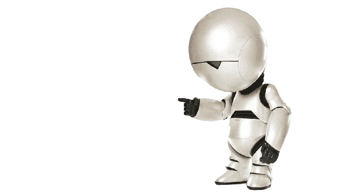

The Hitchhiker's Guide to the Galaxy (1979)
The first book in the series, blending science fiction with absurdist humor.
The Restaurant at the End of the Universe (1980)
Sequel to the first book, continuing Arthur Dent's adventures through space.
Life, the Universe and Everything (1982)
The third book, laden with more philosophical musings and comedic escapades.
So Long, and Thanks for All the Fish (1984)
The fourth installment, focusing more on Earth and human-nature interactions.
Mostly Harmless (1992)
The fifth and final book in the "Hitchhiker's Guide" series, concluding the epic adventure.
Dirk Gently's Holistic Detective Agency (1987)
The first book in the Dirk Gently series, blending detective fiction with science fiction.
The Long Dark Tea-Time of the Soul (1988)
The sequel to "Dirk Gently's Holistic Detective Agency," featuring more holistic detective work.
Last Chance to See (1990)
A non-fiction book co-written with Mark Carwardine, documenting endangered species around the world.
The Salmon of Doubt (2002, posthumous)
A collection of writings, including incomplete material from an intended Dirk Gently novel and other essays.